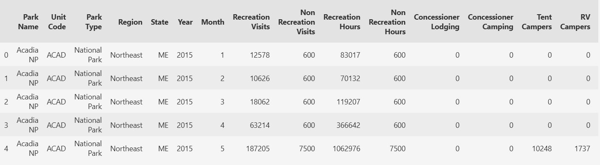

Dataset 1 — National Park Visitation Data
To clean the visitation data on U.S. National Parks, I dropped columns with total values such as TentCampersTotal, YearTotal, and RVCampersTotal, as they were not necessary for this project. Column names were standardized for consistency, commas were removed from numeric strings, and object types were converted to integers.

